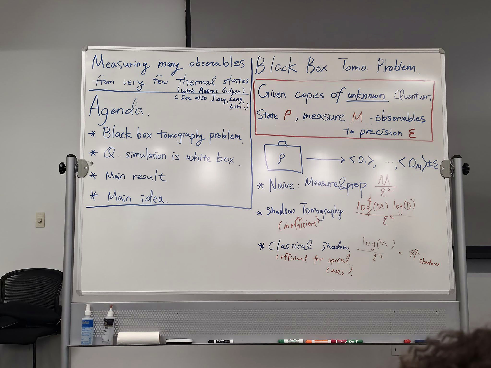
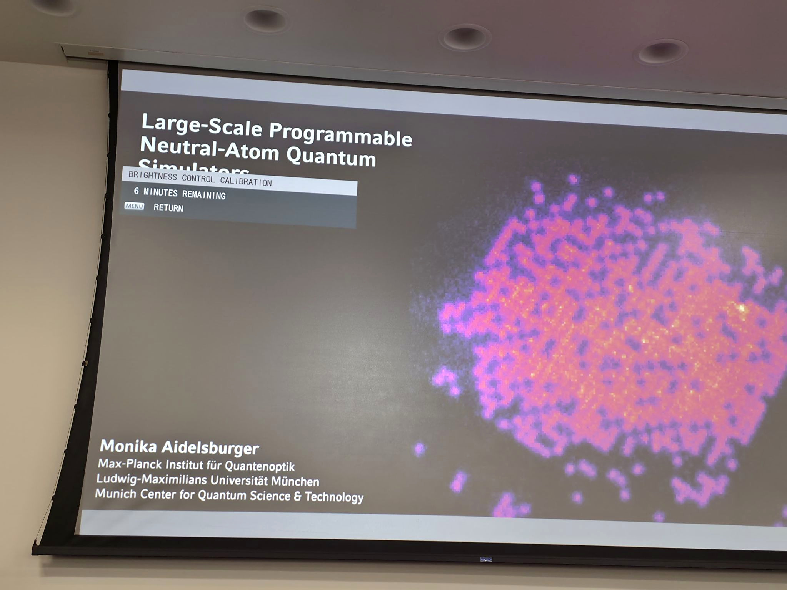
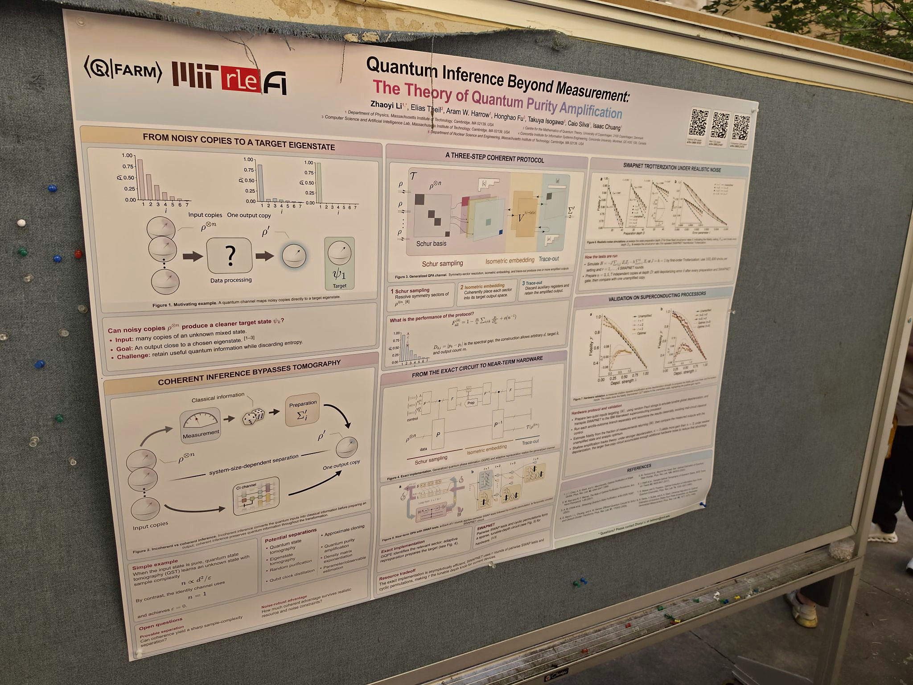

How much can we learn from a quantum system without repeatedly preparing and measuring it?
On my first visit to Stanford University, I had the opportunity to attend the final afternoon of Stanford Q-FARM’s Quantum Computational Sensing workshop. Although I could only make it to the poster session and two talks, both gave me plenty to think about.
Anthony Chen from UC Berkeley presented “Measuring Many Observables From Very Few Thermal States.” My main takeaway was that smarter measurement strategies can fundamentally change the resources needed to extract useful information from quantum systems.
Monika Aidelsburger from LMU Munich then spoke about large-scale programmable neutral-atom quantum simulators—highly controllable systems that can help researchers experimentally investigate complex many-body physics.


The poster session widened the picture further, covering topics ranging from interferometry and loss-tolerant sensing to quantum inference and potential approaches for detecting quantum gravity.

I experienced only a small part of this three-day workshop, but it was a memorable introduction to Stanford and reinforced how much there is to explore at the intersection of quantum computing, simulation, and sensing.
Looking forward to returning and attending many more conversations like these.